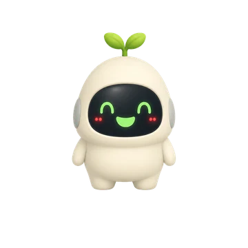
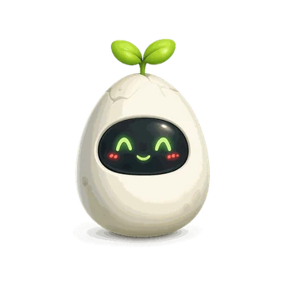
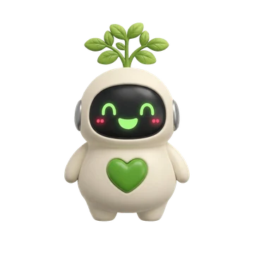

Constancia, no perfección
Marca lo que has hecho hoy y ya está. Sin rachas que se rompen, sin culpa y sin anuncios.
Insignia de
Google Play
Google Play
QR
¿Estás en el ordenador? Escanéalo con el móvil.
Gratis y sin anuncios. Para Android.
Buen ritmo

CÓMO FUNCIONA
Marcas, Nori crece y nada se rompe
-
1
Marca lo que has hecho
Un toque en el círculo y queda hecho. Si te equivocas, otro toque lo deshace.
-
2

Huevo Cría 
Adulto Nori crece contigo
Cada hábito que marcas le da experiencia. Empieza siendo un huevo, sale del cascarón y llega a adulto. Se despierta en cuanto das el primer paso del día.
-
3Cogiendo ritmo
Un paso hoy y vuelve a subir.
Si un día no llegas, no se rompe nada
No hay racha que vuelva a cero. Tu ritmo baja poco a poco y sube otra vez con el siguiente paso.